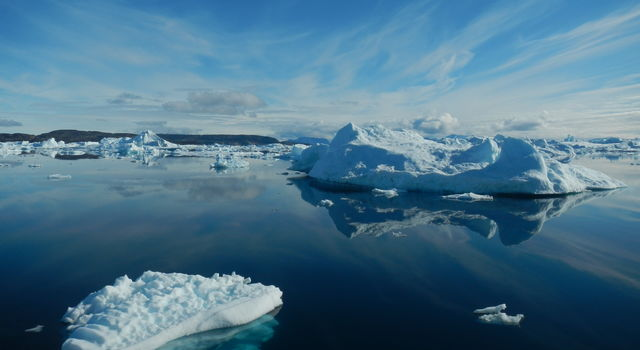
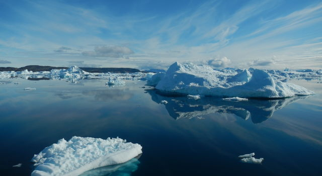

We use energy when we keep the lights on (even when not needed), burn coal, and use fossil fuels.
Buring fossil fuels releases CO2 into the atmosphere which then causes climate to change as temperatures begin to rise, leading to global warming.
When global warming occurs, regions all over the world become hotter. As it gets hotter, the glaciers in the artic will begin to melt and the wild life that lived there will no longer have their habitat.
 
